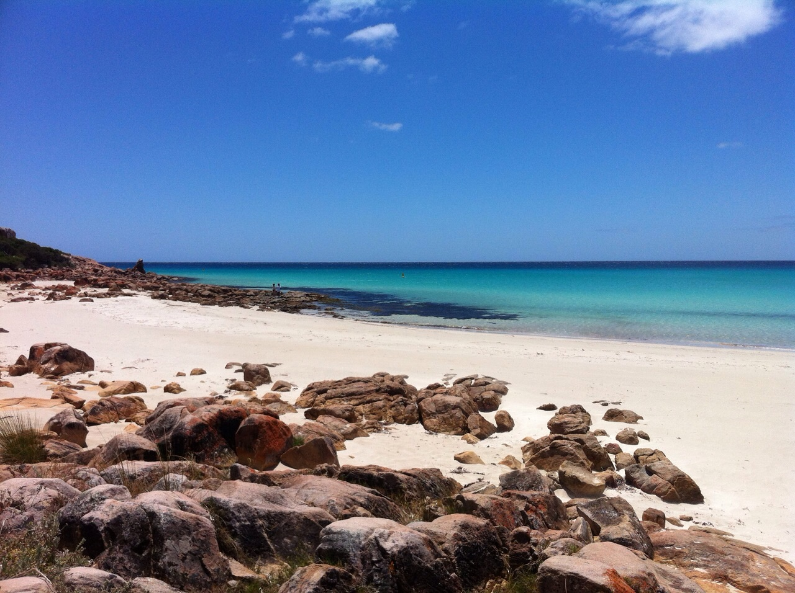

<link rel="stylesheet" href="http://cdnjs.cloudflare.com/ajax/libs/leaflet/0.7.3/leaflet.css" />
<link rel="stylesheet" href="https://cdnjs.cloudflare.com/ajax/libs/leaflet.markercluster/0.4.0/MarkerCluster.css" />
<link rel="stylesheet" href="https://cdnjs.cloudflare.com/ajax/libs/leaflet.markercluster/0.4.0/MarkerCluster.Default.css" />
<script src="http://cdnjs.cloudflare.com/ajax/libs/leaflet/0.7.3/leaflet.js"></script>
<script src="https://cdnjs.cloudflare.com/ajax/libs/underscore.js/1.8.3/underscore-min.js"></script>
<script src="https://cdnjs.cloudflare.com/ajax/libs/jquery/2.1.4/jquery.min.js"></script>
<script type="text/javascript" src="http://maps.stamen.com/js/tile.stamen.js"></script>
<script src="https://cdnjs.cloudflare.com/ajax/libs/leaflet.markercluster/0.4.0/leaflet.markercluster.js"></script>

<div id="map" style="height: 720px; width: 1080px;"></div>

<script type="text/template" class="popup-template">

	<h3><%= organization %>: <%= location %></h3><hr/>
	
	<div>About: <%= description %></div>
	<br>
	<div><u>Fellows</u></div>
	<ul>
	    <% _.each(fellows, function( fellow ){ %>
	        <li>
	            <%- fellow %>
	        </li>
	    <% }); %>
	</ul>

</script>

<script>
window.onload = function() {
	var map = new L.Map('map', {center: new L.LatLng(35.00, 0.00), zoom: 2});
	var layer = new L.StamenTileLayer('watercolor');
	map.addLayer(layer);
	map._layersMaxZoom=8;
	
	var popupTemplate = _.template($( "script.popup-template" ).html());

	var markers = L.markerClusterGroup();

	for (var i = 0; i < testData.length; i ++) {
	  var datum = testData[i];
	  var loc = new L.LatLng(datum.latitude, datum.longitude);
	  var marker = new L.Marker(loc, {title: datum.organization});
	  marker.popupData = datum;
	  marker.bindPopup(popupTemplate({
	  	organization: marker.popupData.organization,
	  	fellows: marker.popupData.fellows,
	  	location: marker.popupData.location,
	  	description: marker.popupData.description
	  }));
	  markers.addLayer(marker);
	}

	map.addLayer(markers);
};

var testData = [{"longitude": -73.9865812, "fellows": ["Zachery Morris", "Somalia Samuel", "Omar Shakir"], "organization": "CCR", "startDate": "01/09/2014", "finishDate": "01/09/2016", "description": "Civil rights", "location": "NYC", "latitude": 40.7305991}, {"longitude": -72.3570972, "fellows": ["Vannel Achat", "Charlot Jeudy ", "Noisette Marie Claude Nimshcie  ", "Marie Naomie Estime  "], "organization": "Finissant", "startDate": "01/10/2013", "finishDate": "", "description": "UN Cholera case was among the latest ones. We have a blog on that. ", "location": "Haiti", "latitude": 19.1399952}, {"longitude": 28.0497222, "fellows": ["Princess Magopane"], "organization": "", "startDate": "01/02/2012", "finishDate": "01/06/2015", "description": "Socio-economic rights in South Africa. Marikana case. ", "location": "Johannesburg, South Africa", "latitude": -26.205}, {"longitude": -75.0458515, "fellows": ["Camila Mari\u00f1o Venegas"], "organization": "ERI", "startDate": "01/11/2013", "finishDate": "01/10/2015", "description": "Extractive industries and environment", "location": "Peru", "latitude": -6.8699697}, {"longitude": -99.1332102, "fellows": ["Itzel Jazm\u00edn Moran Ch\u00e1vez", "Ana Luisa Vega", "Yesenia Anahi Avila"], "organization": "ProDESC", "startDate": "2/1/2014", "finishDate": "31/01/2016", "description": "Extractive industries, rights of communities and workers. There is now a big case coming against one Canadian company ", "location": "Mexico City, Mexico", "latitude": 19.4325301}, {"longitude": 28.0497222, "fellows": ["Wandisa Phama", "Palesa Madi", "Cebile Ndebele", "Ayabonga Nase", "Baone Twala"], "organization": "CALS", "startDate": "01/01/2014", "finishDate": "31/12/2015", "description": "Business and HR, environment, domestic violence. Research and legal aid", "location": "Johannesburg, South Africa", "latitude": -26.205}, {"longitude": 73.0643744, "fellows": ["Umer Gilani", "Ayesha Khan", "Zahoor Ellahi"], "organization": "FFR", "startDate": "15/03/2015", "finishDate": "15/03/2017", "description": "War on terror (drones, etc) and death penalty ", "location": "Islamabad, Pakistan", "latitude": 33.6945756}, {"longitude": 78.6677428, "fellows": ["Vishal Kashyap ", "Smriti Kartikeya (check spelling of surname on website it is 'Kartikeyan')", "Altaf Mehraj", "Kailash Behara (check spelling of surname - on website it is 'Behera')", "Soroj Kumar Behera (check spelling of first name and change bio on website accordingly - spelt both 'Saroj' and 'Soroj' on website)", "Dolamani Pradhan", "Meihoubam Joyshree Devi", "Isha Khandelwal ", "Deboriya Mukerjee (check spelling of first name - on website it is 'Debapriya')", "Archana Punja Rupwate", "Juno Rehman (check name - on website it is 'Juno Rahman Singgakhongbam')", "Varnika Singh"], "organization": "HRLN", "startDate": "01/08/2013", "finishDate": "01/03/2015", "description": "You name it!:) Long list of issues across India", "location": "India", "latitude": 22.3511148}, {"longitude": 18.4172485, "fellows": ["Solminic Joseph", "Chandre Stuurman", "Amanda Rinquest", "Demichelle Petherbridge"], "organization": "EELC", "startDate": "01/04/2013", "finishDate": "01/10/2015", "description": "Right to education and community mobilization in South Africa", "location": "Cape Town, South Africa", "latitude": -33.9289049}, {"longitude": 100.83273, "fellows": ["Thornthan Kanmangmee ('Neung')"], "organization": "ERI", "startDate": "01/10/2013", "finishDate": "01/10/2015", "description": "Extractive industries and environment", "location": "Thailand", "latitude": 14.8971921}, {"longitude": 13.3888599, "fellows": ["Christian Schliemann", "Nicolas Bueno "], "organization": "ECCHR", "startDate": "01/07/2014", "finishDate": "30/06/2016", "description": "Strat litigation against state and corporate actors across the world: from drones in Yemen to violence in Colombia", "location": "Berlin", "latitude": 52.5170365}, {"longitude": 95.9999652, "fellows": ["Lum Ja", "Than Than Aye"], "organization": "ERI", "startDate": "01/09/2014", "finishDate": "01/09/2016", "description": "Extractive industries and environment", "location": "Myanmar", "latitude": 17.1750495}, {"longitude": -72.3570972, "fellows": ["Jean Donelet Frederique ", "Kevenot Dorvil"], "organization": "Stagiaire", "startDate": "01/10/2013", "finishDate": "", "description": "UN Cholera case was among the latest ones. We have a blog on that. ", "location": "Haiti", "latitude": 19.1399952}, {"longitude": 34.4607415, "fellows": ["Mohammed Attallah", "Hanaa Abdelal", "Raed al-Porsh (check spelling of surname - on website it is 'Ra'ed Mohammed Al-Borsh')", "Waleed Abu-Zeed (check spelling of name - on website it is 'Walid Abu-Zaid')", "Rasha al-Sha'er", "Suheir Kharma"], "organization": "PCHR", "startDate": "01/10/2013", "finishDate": "30/09/2015", "description": "Legal aid to people suffering from repression in Gaza. ICC and Israel issue, universal jurisdiction", "location": "Gaza, Palestine", "latitude": 31.5077213}, {"longitude": 31.0099095, "fellows": ["Ektaa Deochand", "Tawana Nharingo", "Shaun Bergover"], "organization": "LRC", "startDate": "01/01/2014", "finishDate": "31/12/2015", "description": "Legal services to marginalized and repressed groups of society in South Africa", "location": "Durban, South Africa", "latitude": -29.8618254}, {"longitude": -100.4458825, "fellows": ["Michelle Harrison", "Katherine McDonnell", "Upasana Khatri", "Sean Powers"], "organization": "ERI", "startDate": "01/09/2013", "finishDate": "01/08/2015", "description": "Extractive industries and environment", "location": "US", "latitude": 39.7837304}, {"longitude": 28.0497222, "fellows": ["Jade Amman", "Nhlamulo Mvelase", "Velemseni Zulu", "Kelly Kropman", "Tasneem Kader"], "organization": "LRC", "startDate": "01/01/2014", "finishDate": "31/12/2015", "description": "Legal services to marginalized and repressed groups of society in South Africa", "location": "Johannesburg, South Africa", "latitude": -26.205}, {"longitude": 1, "fellows": ["Add once hired"], "organization": "Reprieve ", "startDate": "", "finishDate": "", "description": "War on terror (drones, etc) and death penalty ", "location": "", "latitude": 1}, {"longitude": 19.0156172, "fellows": ["Diane Sobmeka", "Rose Allaissem"], "organization": "ATPDH ", "startDate": "?", "finishDate": "?", "description": "Wide range of issues. In recent months, fellows work on the case of former Chadian dictator Hiss\u00e8ne Habr\u00e9 and his accomplices. ", "location": "Chad ", "latitude": 15.6134137}, {"longitude": 26.5272648, "fellows": ["Talita Mshweshwe", "Michael Tsele"], "organization": "LRC", "startDate": "01/01/2015", "finishDate": "04/01/2017", "description": "Legal services to marginalized and repressed groups of society in South Africa", "location": "Grahamstown, South Africa", "latitude": -33.3070589}, {"longitude": 122.7312101, "fellows": ["Zharmai Chan Garcia", "Charlaine Latorre"], "organization": "CenterLaw", "startDate": "01/07/2014", "finishDate": "30/06/2016", "description": "Freedom of expression (many journalists' cases), other issues", "location": "Philippines ", "latitude": 12.7503486}, {"longitude": 18.4172485, "fellows": ["Zama Khumalo", "Lara Wallis", "Elgene Roos", "Lara Sauerbier"], "organization": "LRC", "startDate": "01/01/2014", "finishDate": "31/12/2015", "description": "Legal services to marginalized and repressed groups of society in South Africa", "location": "Cape Town, South Africa", "latitude": -33.9289049}, {"longitude": 28.0497222, "fellows": ["Mbekezeli Benjamin", "Nkosinathi Sithole", "Lwazi Mtshiyo", "Zwonaka Netshifulani "], "organization": "SERI", "startDate": "01/01/2014", "finishDate": "31/12/2015", "description": "Socio-economic rights in South Africa. Marikana case. ", "location": "Johannesburg, South Africa", "latitude": -26.205}]

</script>